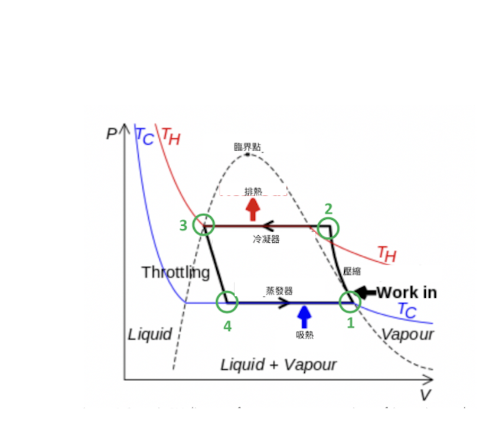

研究組員：李世權 Gemini
蒸汽壓縮制冷系統 (Vapor Compression Refrigeration System, VCRS) 為 HVAC (Heating, Ventilation, and Air Conditioning 通風空調系統) 與冷凍工程領域中最核心的逆向熱力循環。本報告解析理想 VCRS 在 $P-v$ 圖 (壓容圖) 上的狀態軌跡變化，並深入探討壓縮與膨脹曲線的由來。
在 $P-v$ 圖中，縱軸代表絕對壓力 $P \text{ (kPa)}$，橫軸代表比容 $v \text{ (m}^3\text{/kg)}$。其封閉曲線所包圍之面積反映了系統在循環過程中的 做功(W) 與 容積(V) 變化特性。
下圖1 示範冷媒在理想 $P-v$ 壓容圖上之四大過程軌跡。圖中等熵壓縮曲線 $1 \rightarrow 2$ 精確呈現出由左往右凹向上的曲線弧形特徵：

為說明 $P-v$ 圖上壓縮曲線由左往右呈數學上稱為「凹向上 Convexcity towards origin）」的幾何特徵，需從多變熱力過程的狀態方程式進行一階與二階微分推導。
在絕熱可逆（等熵;無損失）或多變壓縮過程中，氣體壓力 $P$ 與比容 $v$ 遵循「理想氣體多變方程式（Polytropic Process Equation）」：
$n$：多變指數（Polytropic Index）。當過程為可逆絕熱（等熵）時， $n = C_p/C_v > 1$ （絕熱指數 n = 等壓比熱與等容比熱之比 $C_p / C_v$ ）。由此可知壓力 $P$ 與比容 $v$ 成反比例關係。
$C$：常數
當氣體處於大容積狀態時（曲線右側），進一步壓縮單位容積所引起的壓力上升幅度較小（斜率較平緩）；然而當容積已被大幅壓縮至微小狀態時（曲線左側），極小的容積縮減都會導致氣體分子碰撞頻率劇烈激增，造成壓力 暴漲上升（斜率變得極度陡峭）。這種物理現象在幾何上即表現為左陡峭右平緩的「凹向上」雙曲弧線。
要區別「壓縮過程」與「膨脹過程」在 $P-V$ 圖上函數相同，但形狀表現不同的核心原因，可以這樣來理解：
壓縮過程看氣體（走氣體雙曲線 $P \propto v^{-n}$，呈凹向上弧線）；膨脹過程看相變（走液體閃蒸等焓線 $h = \text{Const}$，近乎斜直線）。
✦壓縮過程（氣體多變過程）: 冷媒在壓縮機內全程皆為純氣體狀態（氣體好壓縮），完全遵循多變氣體v是Ｐ的函數 $P(v) = C \cdot v^{-n}$，因此在 $P-V$ 圖上呈現標準的凹向上弧線（杯狀雙曲線）。
✦膨脹過程（節流液體閃蒸）: 冷媒進入膨脹閥時是高壓液體（液體極難膨脹），通過閥口「P瞬間降壓」，同時「V瞬間脹大」而閃蒸成氣液混合物，膨脹過程中Ｐ與Ｖ之間的變化關係屬於「極瞬間」，在P-V圖上由點3瞬間變成點4，所以近乎直線。所以將這段膨脹過程歸為「不做功」的等焓過程（$h=\text{Const}$），受限於冷媒兩相區的液變汽物性變化，使其在 $P-V$ 圖上的以「等焓」軌跡呈現「斜降的近乎直線」。
在高溫過熱區（蒸體區）與低溫過冷區（液體區）中，等溫線（$T$ 曲線）呈現向下傾斜且彎曲的弧形，主要是由以下兩個熱力學與物質狀態特性決定的：
1. 過熱蒸汽區（右側）：氣體壓縮性與雙曲線關係在飽和包絡線右側的過熱蒸汽區，冷媒處於單相氣體狀態。理想氣體狀態方程式：當氣體遠離液化點時，其行為接近理想氣體 $P \cdot v = R \cdot T$。在等溫（$T = \text{常數}$）條件下，壓力 $P$ 與比容 $v$ 成反比：$$P = \frac{R \cdot T}{v}$$微積分證明：對 $v$ 微分可得一階與二階導數：$$\frac{dP}{dv} = -\frac{RT}{v^2} < 0 \quad (\text{一階導數負數：曲線向下傾斜})$$$$\frac{d^2P}{dv^2} = \frac{2RT}{v^3} > 0 \quad (\text{二階導數正數：幾何上凹向上})$$物理意義：這是一條標準的反比例雙曲線。當壓縮氣體使比容 $v$ 變小時，分子碰撞壁面的頻率大幅增加，導致壓力 $P$ 以加速度方式劇烈上升，因此呈現由右下向左上彎曲的弧形。
2. 過冷液體區（左側）：液體不可壓縮性導致極陡彎曲在飽和包絡線左側的過冷液體區，冷媒已完全凝結為單相液體。不可壓縮性（Incompressibility）：液體分子之間的距離極小，分子間斥力強大，因此極難被壓縮。
物理意義：要讓液體的比容 $v$ 產生微小的縮減，必須施加極其巨大的壓力 $P$。因此在 $P-v$ 圖中，等溫線一進入過冷液體區就會瞬間向上陡升。這種從水平/平緩狀態急劇轉折為近乎垂直線的轉折點，在圖上就表現為極為顯著的彎曲曲線。
3.兩區與中間兩相區的對比過熱區 & 過冷區（單相區）：因為沒有發生相變，壓力與容積必須同時改變才能維持溫度不變，故 $P$ 與 $v$ 呈現反比彎曲關係。兩相共存區（蒸發器與冷凝器內部）：因為潛熱作用，狀態改變時同時進行相變（蒸發或冷凝），對於純物質而言，定壓即定溫（$P_{\text{sat}} \leftrightarrow T_{\text{sat}}$），因此在包絡線內部等溫線會由彎曲轉為水平直線。
使用者常問及「往復式壓縮機 P-V 指示圖（如圖 3.3）」與「全系統 VCRS 循環圖」之差異，以下進行詳細分析：
| 比較項目 | 全系統 VCRS 理想循環圖（圖 1.1） | 往復式壓縮機 P-V 指示圖（圖 3.3） |
|---|---|---|
| 分析區域範疇 | 跨越四大元件（壓縮機、冷凝器、膨脹閥、蒸發器）。 | 僅限於壓縮機汽缸內部空間。 |
| 橫軸座標物理量 | 單位質量比容 $v \text{ (m}^3\text{/kg)}$。 | 汽缸總容積 $V \text{ (m}^3\text{)}$ 或行程比例。 |
| 曲線 1-2 過程 | 冷媒在壓縮機內的等熵壓縮過程。 | 汽缸內氣體被活塞壓縮過程（壓縮）。 |
| 曲線 3-4 過程 | 膨脹閥內的 等焓節流降壓（氣液混合）。 | 汽缸餘隙容積內高壓殘餘氣體的多變膨脹。 |
| 包圍面積意義 | 單位質量冷媒之淨做功量與能量轉換。 | 壓縮機單次往復行程之指示功 $W_{\text{ind}} = \int P \, dV$。 |
兩張圖中的壓縮曲線（1-2）與膨脹曲線（3-4）在數學實質上均遵循 $P V^n = C$ 關係，因此由左往右看均為下凹曲線。圖 3.3 為極佳之壓縮機內部微觀分析替代圖，可與全系統宏觀循環圖形成互補。
理想蒸汽壓縮制冷循環由以下四個熱力過程組成：
以小型 R-134a 冰水機組理想循環為例，關鍵狀態點數據如下：
計算結果：該系統之理想冷凍 COP 為 4.67。
工程技師照著以下步驟做，即可順利完成在 $P-v$ 圖上的系統分析與邊界核算：
本報告全文採用查證等級標示制度：
查證等級：(3) 既有知識工程參考值（本報告屬理論推導與通用工程熱力學知識，實務設計時仍須與技師及適用標準逐項確認）。
讀者提醒：本文件係依據理想蒸汽壓縮制冷循環（忽略壓縮機等熵效率損失、管路壓力降及過冷/過熱度）進行理論編寫。實際工程操作時，必須考慮真實冷媒之偏離特性與過熱過冷狀態，請讀者務必親自持官方正版冷媒物性表與技師簽章規範核對驗證。